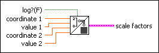

Map Setup VI
Owning Palette: Picture Plots VIs
Requires: Base Development System
Uses pixel and data ranges to determine scale factors such that (a * data value) + b is the pixel value that corresponds to that data value.

 Add to the block diagram Add to the block diagram |
 Find on the palette Find on the palette |